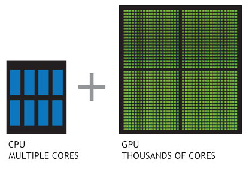

Your graphics card in your computer is doing the same thing
- For every visible pixel on the screen
- Call the main() method to decide the pixel color
- Inside the main() method you decide the rule
🢂 Now the advantage of this is that your graphics card can do this for every pixel at the same time!!
Lets look at some first building blocks.
🢂 Here is a reference page as a handy summary of the syntax and conventions involved
- The most integral datatype is the vector structure.
- It is used to access and store groups of values e.g. positions (x, y, z) or colors (r, g, b, a)
🢂 Here is a reference page as a handy summary of the syntax and conventions involved
Lets split the canvas into a white and black half ◨
- X / Y on the grid ➡ gl_FragCoord.x / gl_FragCoord.y
- color of the pixel ➡ gl_FragColor.rgba
🢂 Hint: Get used to express numbers always with a decimal point (1.0, 0.0 ...)
🢂 Here is a handy list of all GLSL functions you can use!
The pixel coordinates are based on the canvas size which is inconvenient:
- We do not want to change the shader for every screen / canvas size
- Keeping all values normalized (between 0.0 and 1.0) allows us to relate values more easily with each other
- To normalize our coordinates we just have to divide them by our canvas size (= resolution)!
🢂 To get the resolution we access the uniform vec2 u_resolution variable
Lets rewrite the canvas splitting example with normalized coordinates:
🢂 Bonus: We can now express relationships in percentages (0.5 for 'half') without knowing the actual dimensions of the canvas